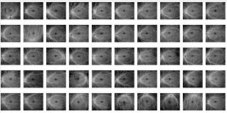
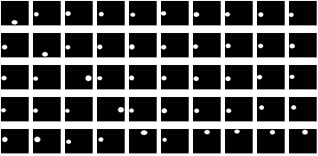

Dual-Path Attention based Network for Fundus Segmentation on OCT-Angiography
--------------------------------------------------------------------------------------------------------------------------------------------
Dual-Path Attention Network (DPANet) model for segmentation.
Permission to use copy, or modify this dataset, tool and codes for educational and research purposes.
E-mail : mafei0603（at）163.com ; 17861318579（at）163.com
Homepage : https://17861318579.github.io/ODOID
--------------------------------------------------------------------------------------------------------------------------------------------
1. Dataset Description
Our constructed OpticDisc segmentation OCTA Image Dataset (ODOID), which was acquired by a SS-OCT (swept-source optical coherence tomography) system (VG200D, SVision Imaging, Ltd., Luoyang, Henan, China).
Photos are captured by a 12 mm × 12 mm SS-OCT centered on the fovea in 288 Normal human eyes. We selected 50 OCTA images from these. To be private, we delete the information of volunteers, such as sex, name and age. The optic discs are labeled in the ODOID dataset.
All images are labeled by the ophthalmologist. The ophthalmologist labeled the retinal optic discs in the ODOID dataset.
2.1 The key code of our approach (DPANet) for demo can be downloaded here (Pytorch).
2.4 The code of U-Net for demo can be downloaded here (Pytorch).
--------------------------------------------------------------------------------------------------------------------------------------------
FIGURE 1 The thumbnail view of the ODOID Dataset
The Original Image 
The Ground-truth of OD 
--------------------------------------------------------------------------------------------------------------------------------------------